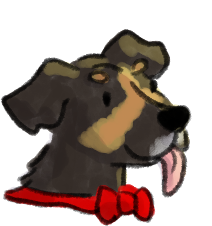
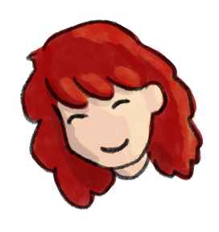

Did I just curse your computer or show you my art?
You’ll never know.
🐌💖💀
XOXO - June
I'm June.
Designer by day. Chaos curator by night.
This isn’t a portfolio. This is my dumping ground.
Expect drawings, writing, video loops, brain spirals, and emotional graffiti.
Sometimes digital. Sometimes sketchy. Sometimes French or Dutch. I don’t translate.
If it’s here, it was in my head — and now it’s not.
Welcome to the mess. Scroll if you’re nosy.

